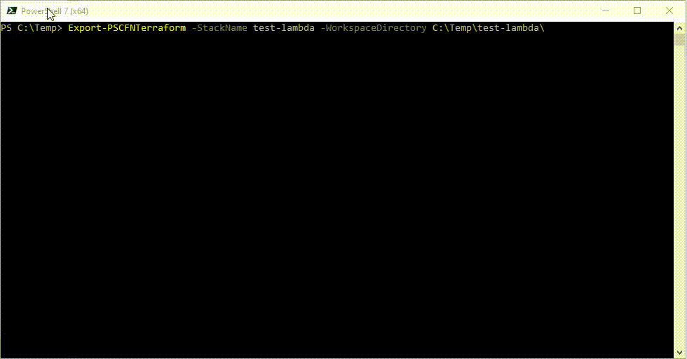

Example - Lambda Stack
This example shows a serverless lambda with embedded python script and an event bride rule to trigger it.
Demonstrates the following
- How a serverless resource is expanded to all implied resources.
- How inline lambda code is exported to Terraform.
- Dependency resolution within IAM policies.
CloudFormation
CloudFormation to build the stack is here.
The stack was deployed with a stack name of test-lambda.
Import run
This is the command to export test-lambda to Terraform in action...

A few points to note here
- An extra provider ArthurHlt/Zipper is included to manage the extracted lambda code.
- There are five imported resources, when the CloudFormation only contains two resources. This is because the serverless lambda declaration implies creation of a role, an Eventbridge event and a lambda permission to permit Eventbridge to invoke the lambda.
- When the function is imported (Resource 1/5) the inline python code is extracted and written to a file
- In the plan stage at the end, we see some changes
- A new resource. This creates the zip package of the extracted python code for deployment.
- A change to the lambda function. This is because we have injected the filename and source_code_hash arguments to refer to the zip package, by way of the additional provider.
- A change to the bucket - This always happens with S3 buckets, but is a non-destructive change. It wants to add the default
privateACL type, as this isnullin the state file afterterraform import.
- We are also warned about the lambda. It is entirely possible the the actual code of the lambda is newer that what was deployed originally by the CloudFormation. A newer version could have been uploaded from the Lambda console, or via Lambda APIs as might happen in a CI/CD system. Without refreshing the content of the extracted script file with the current version, application of the Terraform configuration would overwrite the current version of the lambda code.
Generated outputs
main.tfis here